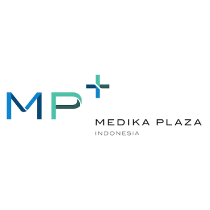
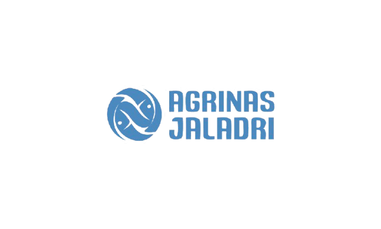
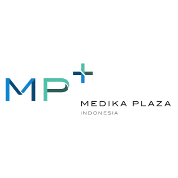
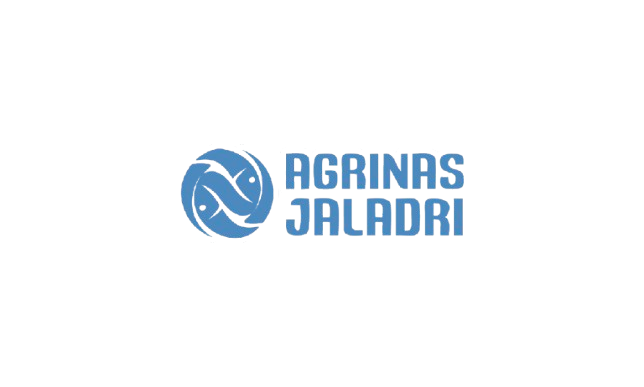

Klinik Utama Diagnosa adalah klinik yang didirikan pada tahun 2007, awalnya berfokus pada pemeriksaan laboratorium dan radiologi. Pada tahun 2019, klinik ini berkembang menjadi PT. Diagnosa Pratama Mulia, memperluas layanan kesehatan umum dan menjadi Perusahaan Jasa Keselamatan dan Kesehatan Kerja (PJK3) yang diakui oleh Kementerian Ketenagakerjaan.
Klinik Utama yang mampu untuk selalu tumbuh, berkembang, adaptif serta memberikan manfaat bagi masyarakat.


Klinik Utama Diagnosa telah Lulus Akreditasi Tingkat ⭐ PARIPURNA ⭐ sesuai dengan Standar Akreditasi Kementerian Kesehatan (STARKES) Republik Indonesia pada Tahun 2024.
Klinik Utama Diagnosa juga telah memperoleh Sertifikasi ISO 9001:2015, sebagai standar internasional untuk sistem manajemen mutu. Hal ini menunjukkan komitmen kami dalam memberikan pelayanan kesehatan yang konsisten, aman, dan berkualitas tinggi.


 





Punya pertanyaan atau butuh bantuan? Hubungi kami dan kami akan dengan senang hati membantu Anda.
Jam Operasional:
Senin : 07.00 – 20.00